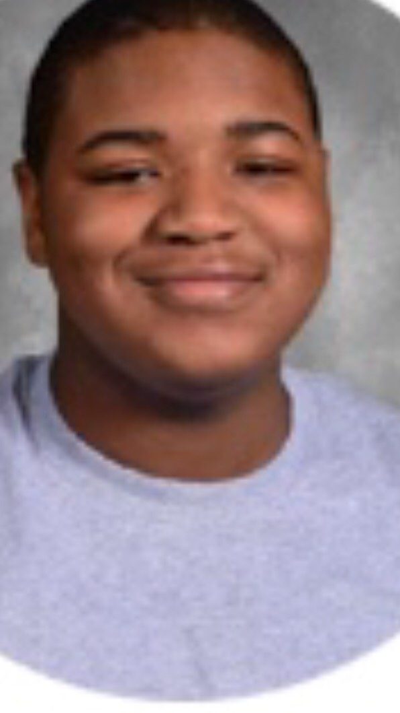

My name is Jabari Hawk im from Philadelphia and I am an only child. I love to watch sports and watch movies and listen to music. I love biographies and Action/comedy movies. I am inspired by people such as Bill Gates and Barack Obama. I look up to them because they became successful not because they were privlaged but because they worked hard and never gave up. They also give back to people in need and that is what type of impact I want to have on the world.My goals in life are to become successful and be just like Bill Gates and Barack Obama.I want to take care of my family and give back to my community. I was introduced into the SMASH program by my litature teacher and he told me and a few other students that it would be a great opprtunity and I jumped at it and after a long proscces I got in to the program.The program is amazing, you make many connections with important people, and you make many friends with simmilar goals as yourself
